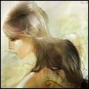

Camylle
Age : 19
Sexe : Femme
Race : Humain
Faction : Alliance
Formation : Prêtre
Description : La jeune femme prit place sur un banc sous un arbre, face à la cathédrale de Stormwind. Elle sortit de sa sacoche un petit carnet, dont elle respira la couverture faite de cuir. Elle l'ouvrit avec délicatesse, comme si c'était un trésor et découvrit les pages vierges. Elle prit alors sa plus belle plume et l'encre dorée qu'elle avait empreintée à Frère Kristoff, sans oublier sa plus belle écriture. Sur la page de garde il y avait juste une signature... "Camylle Eloan".
"Cher journal,
Avant de parler du futur, laisse moi te raconter le passé, et plus particulièrement, le mien (j'essayerai de faire court).
En effet, je ne peux commencer une nouvelle étape sans mettre sur papier tous ces souvenirs, car bien d'autres vont venir les bousculer par la suite !
Comment oublier mon enfance... Anetta fut comme une mère pour moi... C'est elle qui me recueillit à l'âge de trois ans, Papa ne pouvant pas s'occuper de moi seul suite à la mort de ma chère Maman...
Nous allions nous promener dans la forêt d'Elwynn... Je me souviens particulièrement de mon sixième anniversaire où nous avions déjeuné sur l'herbe verdoyante près du Lac de Cristal dans lequel nous nous étions baignés... C'était une belle journée de mai... Le doux chant des oiseaux résonne encore à mon oreille... Quelle surprise lorsqu'en rentrant à l'Abbaye, Frère Paxton, le bibliothécaire, me tendit ce paquet ! "Contes et Légendes Elfiques"... Mes yeux s'étaient illuminés en voyant le livre... Anetta avait ainsi d'autres histoires à me raconter le soir avant d'aller dormir... J'espère que je pourrai y aller un jour...
Ces deux personnes furent pour moi les plus importantes de ma première décennie... La Prêtresse me sensibilisait à la beauté de la nature, du monde extérieur tandis que Paxton s'occupait de mon apprentissage. Durant ces dix années, je m'étais montrée très curieuse, attentive à leur enseignement et je développais selon eux toutes les qualités requises pour suivre l'Enseignement de la Lumière.
Anetta et moi partîmes donc pour la grande Stormwind. Ce décor était tout nouveau pour moi et il m'inspira tout de suite confiance et bien être. Comment rester insensible à cette odeur de pain chaud qui flotte dans les airs, la vue des magnifiques fleurs exposées devant les boutiques, les visages animés des passants... Je ne pouvais m'empêcher de sautiller dans les rues... ! Quand nous arrivâmes devant la cathédrale, je restais ébahie devant tant de splendeur et de majesté. Je fus présentée à la Grande Prêtresse qui m'impressionna : elle portait une longue robe blanche, brodée de dorures, et l 'on pouvait lire sur son visage rayonnant toute la bienveillance et la sérénité. Je la pris alors pour modèle et désirait à tout prix lui ressembler. Après une entrevue pendant laquelle j’admirais et écoutais le chant des choristes, Anetta vint me dire au revoir… Lorsqu’elle vit de petites perles naître dans mes yeux, elle me dit que je pouvais lui rendre visite quand je voulais. J’allais donc la voir le dimanche, toutes les deux semaines…Nous buvions ensemble un lait glacé, comme auparavant… Je lui expliquais qu’à Stormwind, tout allait pour le mieux. J’excellais à l’école et j’allais enfin commencer à apprendre les Principes de la Lumière, étudier les liens entre le Moi et le reste de l’Univers, et les trois grandes vertus qui ne sont autres que le respect, la ténacité et la compassion.
Tout allait pour le mieux jusqu’au jour ou j’appris la mort de Papa, j’avais alors quinze ans… Un courrier provenant du Goldshire m’annonçait qu’il avait été retrouvé sans souffle de vie. Il avait sombré dans l’alcool après la mort de Maman et mon départ…La solitude l’a rendu fou…De cette nouvelle, il en résultat un mois de renfermement, un mois de mutisme. J’avais perdu toute joie de vivre, ainsi que mon foyer familial, que je n’avais presque pas connu. Je devais donc m’installer dans Stormwind… On me trouva une petite chambre, chez les Duncan qui tenaient une boutique d’étoffes (Le parc n’étant pas loin, je pouvais aller rêvasser de contrées elfiques…. J’appris donc à me servir du fil et d’une aiguille et vendais mes créations modestes : sacs, capuches, et capes diverses.
A l’école, j’avais acquis assez de théorie, il fallait donc maintenant que je passe à la pratique.
La Grande Prêtresse m’envoya auprès de Shaina Fuller, l’infirmière de la Cathédrale. Elle m’expliqua comment soigner efficacement, selon les circonstances et la gravité des blessures.
Je m’exerçais sur les malades et les blessés qui étaient temporairement gardés à l’infirmerie. Je prenais plaisir à leur faire partager ma bonne humeur et mon enthousiasme, à les voir sourire entre deux gémissements causés par la douleur que j’arrivais à leur faire oublier…
Je n’étais pas utile seulement aux soins ! Quelle joie lorsque j’appris que je pouvais moi-même enseigner l’écriture et la lecture aux jeunes enfants de l’école de Stormwind ! (à dix-sept ans !) Ce fut une année vite passée ! … mais riche en émotions…
Puis enfin…ma décision, ma quête personnelle…au début de ma dix-huitième année…J’étais enfin une prêtresse de la Lumière…
Camylle était arrivée en bas de la page. Elle laissa s’échapper un long soupir de satisfaction. Elle s’arrêta d’écrire pour prendre une miche de pain, puis bu une gorgée de lait glacé. Enfin elle tourna la page, pour recommencer à écrire de plus belle.
Voilà maintenant cinq mois que je suis partie de Stormwind ! Je ne pouvais pas rester éternellement ignorante de ce monde plein de richesses et de curiosités ! Je découvre ainsi de nouveaux paysages, surprenants par tant de diversité et de beauté ! Et tant de cultures à connaître, tant d’êtres avec qui se lier d’amitié ! Quel changement ! Je ne sais par où commencer…
J’ai d’abord fait la rencontre d’Yshtar… Une jeune guerrière joviale avec qui j’ai parcouru les terres désolées de la Marche de l’Ouest, afin d’aider les pauvres paysans qui ont le courage d’y rester ainsi que la Milice.
Puis j’ai voyagé jusque les Carmines… Qui fut l’endroit de nombreuses rencontres.
Un sourire se dessina sur le visage éclairé de la jeune femme…
Parmi celles-ci, Balun, un nain guerrier d’exception. Il est maintenant mon compagnon de route. Son air renfrogné n’inspire pas sympathie au premier regard… Mais j’ai su découvrir sous cette montagne de courage et de fougue, un cœur énorme. Je suis alors devenue sa chtiott’ curet’ …
J’ai aussi rencontré des elfes : Dalriada (encore une guerrière !) et Chêneblanc, un talentueux poète. Après avoir fait leur connaissance, mon désir d’aller chez eux est encore plus fort !
Et comment pourrais-je oublier Cevi ! Ce jeune et charmant voleur que j’ai eu le plaisir de taquiner lorsque nous sauvions un valeureux garde des orcs…Il n’arrêtait pas de grogner…Je ris encore en repensant à la fois où je lui faisais la tête !
Je me souviens d’un jour où j’avais entendu parler d’un tournoi dans des terres qui m’étaient inconnues… Je voulais absolument y aller… Un elfe, du nom de Sarolendë, accompagné de son fidèle compagnon, Baldor, m’expliqua que ces terres étaient fort hostiles et me proposa de m’accompagner. J’eus plusieurs pertes de connaissance au cours de ce voyage. A l’un de mes réveils, Sarolendë n’était plus seul. Deux hommes se tenaient à ses côtés. Ils se présentèrent à moi. L’un d’entre eux se nommait Silk, Silk Martallan, un voleur. A la vue de ses cheveux noirs, son foulard masquant son visage et ses dagues qui pendaient à sa ceinture, j’ai vite compris qu’il n’était pas question de le taquiner! Je m’attardais donc sur le second. Heltys. Il m’avait paru plutôt discret, cependant j’avais remarqué qu’il n’était pas tout jeune…Il devait être une véritable encyclopédie ! Je me sentis bien petite, mais tellement bien protégée ! Nous avions dû tout de même fuir une fois arrivés à l’arène…Ce fut un véritable choc pour moi… Voir tant de créatures barbares nous courir après, haches à la main… Assoiffées de violence et de sang…
Une fois en sécurité, c’était avec regret que je devais les quitter. Je leur demandais alors si je pouvais les aider dans leurs tâches, et c’est comme ceci que je les rencontra de nouveau à Ironforge (curieuse cité que celle des nains !). Ils accompagnaient un paladin du nom de Valken. Je m’en souviens parfaitement… Quel charisme… Etrange que je ne l’ai jamais rencontré à la Cathédrale auparavant ! Mon sentiment de protection cette fois-ci était doublement renforcé. Ce jour là, j’avais rencontré le clan du Kayan Khan au complet.
Depuis, dès que l’occasion se présente, j’accours leur rendre service…J’ai enfin l’impression de servir à quelque chose… que toutes ces années d’études verront leur dure labeur récompensée…
Le temps me presse, le récit s’arrête ici. A bientôt mon cher Journal.
La jeune femme rangea ses affaires dans son sac de soie et se leva. Le vent caressait ses cheveux châtains. Elle regarda une dernière fois la cathédrale de ses yeux gris perle. C’était un regard confiant, confiant pour l’avenir plein de nouvelles promesses. Puis elle se mit en route… car son ami Balun l’attendait, ils devaient apporter leur aide aux Veilleurs et à la sombre ville de Darkshire…
(Il n'y a pas de suite. Mais Camylle a décidé de reprendre en main son journal à partir d'une certaine date).
Plus d'infos sur Camylle >>>Lire le récit de Camylle >>>